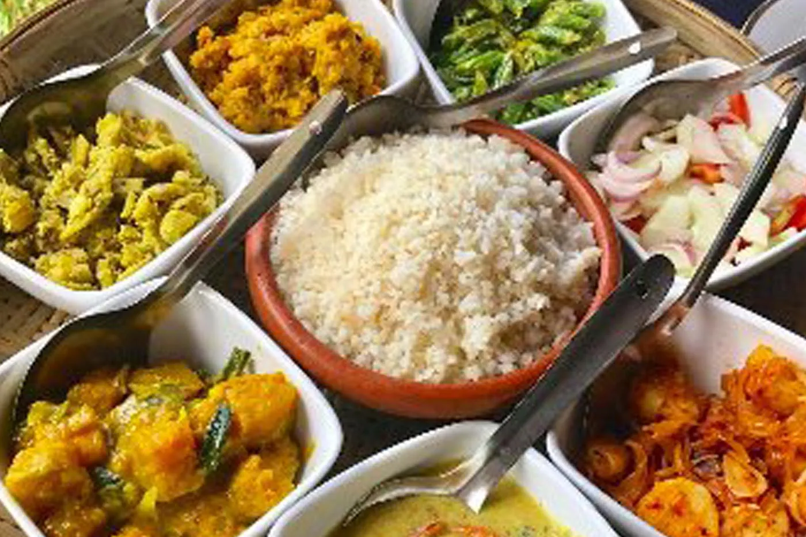
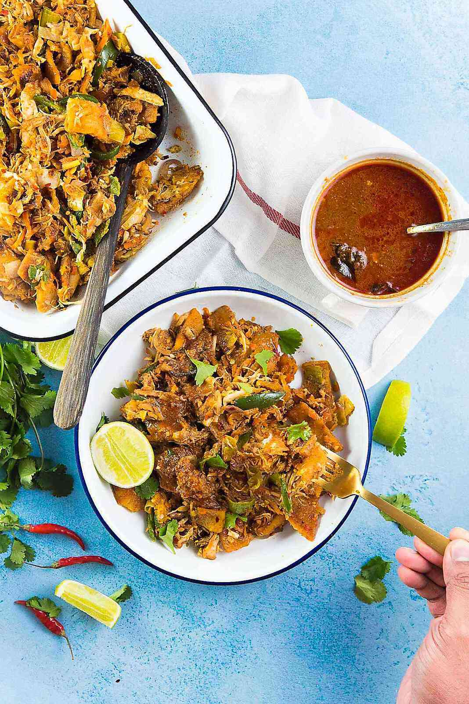
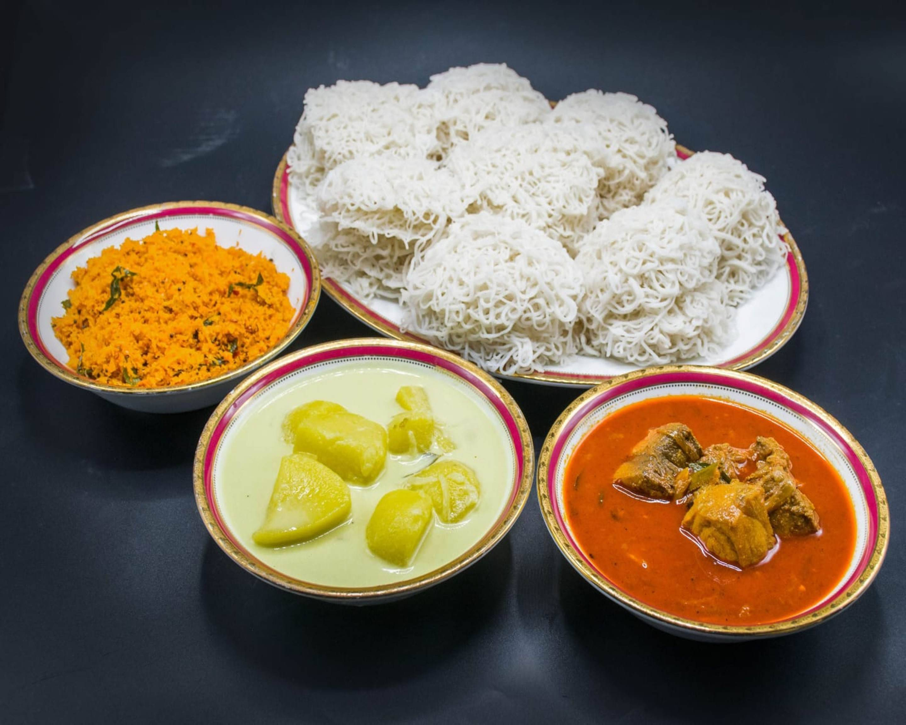
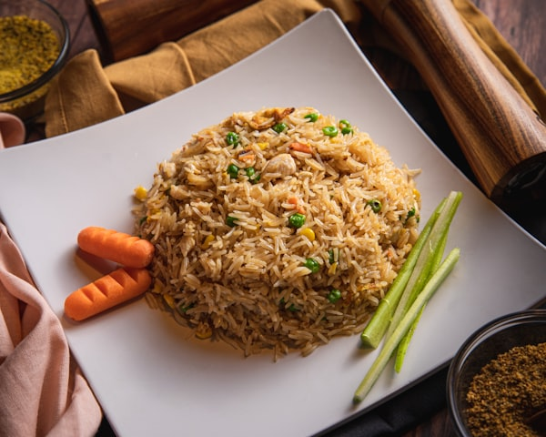
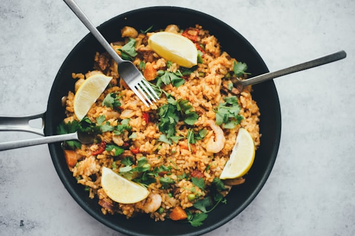

Must-Try Dishes
Iconic Sri Lankan Food

Rice & Curry
The national dish – fluffy rice served with 5–8 small curries (dhal, potato, green bean, eggplant, fish/chicken). Mild to fiery depending on where you eat. ~$2–5

Hoppers (Appa)
Bowl-shaped coconut milk pancakes, crispy edges and soft center. Try with an egg in the middle (egg hopper). Best for breakfast. ~$0.50–2

Kottu Roti
Chopped flatbread stir-fried with vegetables, egg, and/or meat on a sizzling griddle. The clanking sound is part of the experience! ~$2–4

String Hoppers (Idiyappam)
Steamed rice noodle nests, usually served with coconut sambol and curry for breakfast. Delicate and delicious. ~$1–3

Lamprais
Dutch-Burgher influenced: rice, meat curry, frikkadels, and sambol wrapped in banana leaf and baked. A special-occasion dish. ~$5–8

Ceylon Tea
World-famous Sri Lankan tea. Try milk tea (plain or with ginger/cardamom), iced tea, or pure black/white/green varieties. ~$0.20–2
More to Try
Snacks & Sweets
🥠 Short Eats
Fried snacks: fish cutlets, vegetable rolls, vadai, patties. Sold at bakeries – grab a few for a quick bite. ~$0.30–1 each.
🍬 Jaggery & Treacle
Palm treacle (kitul) and jaggery used in sweets like kalu dodol and weli thalapa. Traditional treats from the south.
🥭 Wood Apple
Unique fruit – try wood apple juice or the thick, tangy drink. An acquired taste but very Sri Lankan!
🌶️ Sambols
Pol sambol (coconut), lunu miris (onion-chili), seeni sambol (sweet onion). Essential accompaniments to rice and bread.
Budget Guide
Food Prices in Sri Lanka
| Item | Budget (Local) | Mid-Range | Upscale |
|---|---|---|---|
| Rice & Curry | $1.50–2.50 | $3–5 | $8–15 |
| Hoppers (3–4) | $0.50–1 | $1.50–2.50 | $4–6 |
| Kottu Roti | $1.50–2.50 | $3–5 | $6–10 |
| Tea | $0.20–0.50 | $1–2 | $3–5 |
| Street snacks | $0.30–1 | — | — |